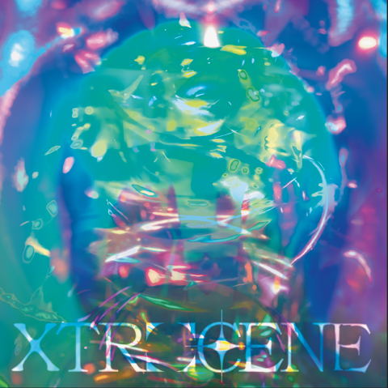

MUSIC

‘XTROCENE’ is new worlds.
A hyper-real representation of universes beyond our cosmic microwave background. Abstractly intertwined with the human and yet completely isolated from it.
This album/video work extends frequency up to the highest and lowest points possible. Each track in the album essentially represents a different exoplanet, culture, and way of existing that may or may not include life at all. The visuals will be embedded into the music, exploring these worlds through distorted geometry, strobes, aliens, humans that aren’t humans, and STROBE. Light, the absence of light, a world, a tiny instance, XTROverse is all of it.